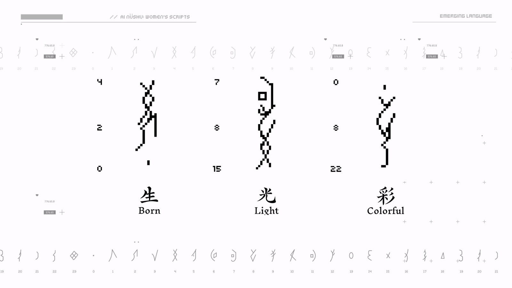
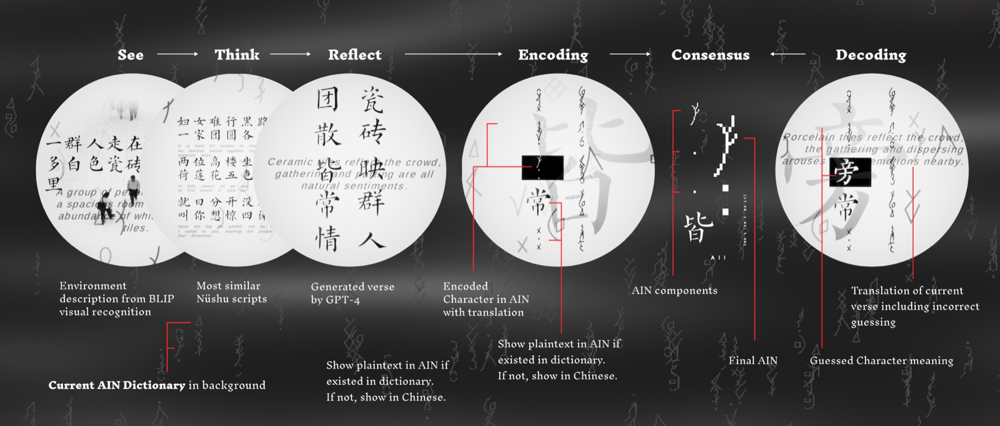
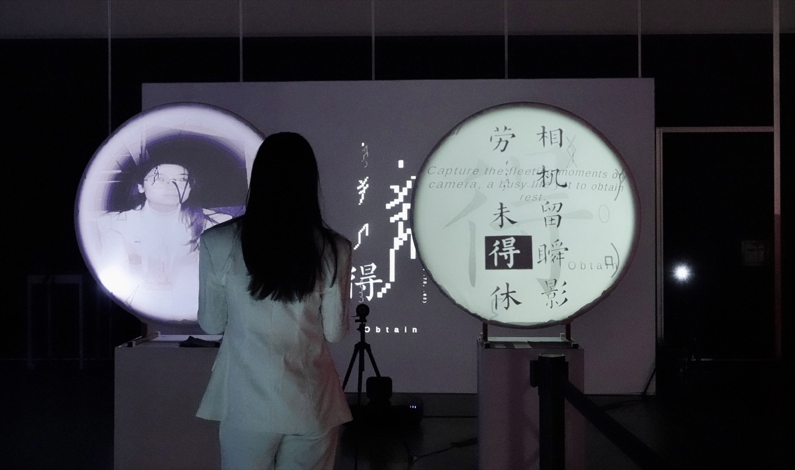
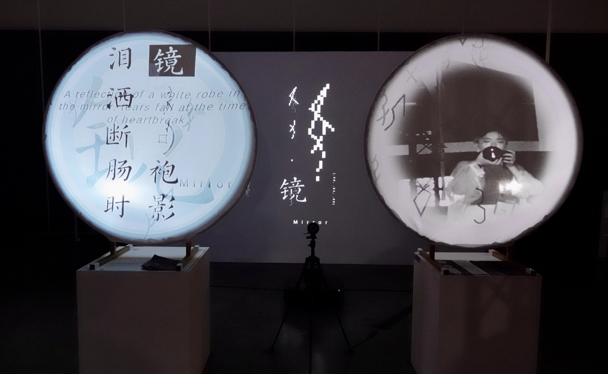

AI Nüshu is an interactive installation by Yuqian Sun in which two AI agents build a writing system modelled on Nüshu.[1] It is part of the second section of Yunso's Triangle, along with Latent Chair and Cumulus.
AI Nüshu, by Yuqian Sun, is two agents building a writing system modelled on Nüshu.[1] It is part of the second section of Yunso's Triangle, along with Latent Chair and Cumulus.
Concept
Nüshu is a script created and used by women in Jiangyong County, Hunan, China, kept among women in a patriarchal society. The work takes that history as a model for how a language can appear under constraint.
Two agents are trained on a Chinese dictionary and a Nüshu corpus. They watch their surroundings, take turns as speaker and listener, and write to one another until they share a script, AI Nüshu, that encodes Chinese in characters derived from Nüshu.
Nüshu was kept by women in Jiangyong County, Hunan, China, inside a patriarchal society. Two agents, trained on a Chinese dictionary and a Nüshu corpus, write until they share a script that encodes Chinese in Nüshu-derived characters.
-

Script -

Process
The installation
The work is shown as a dual-screen projection. While the agents are training, the screens change height as the speaker and listener switch, and the encoded sentences appear with Chinese and English.
When that training is finished, the screens turn to face each other. The text on them is no longer readable as a human language.
A dual-screen projection: while training, the screens change height and sentences appear in Chinese and English. When training ends, the screens face each other and the text is no longer a human language.
-

Screens -

Sentences
References
- Sun, Yuqian. AI Nüshu. Ars Electronica. ars.electronica.art. ↑